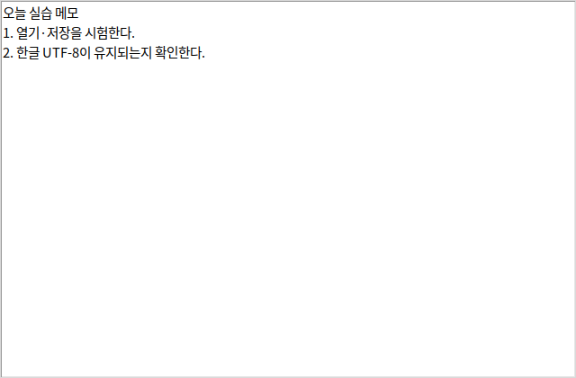
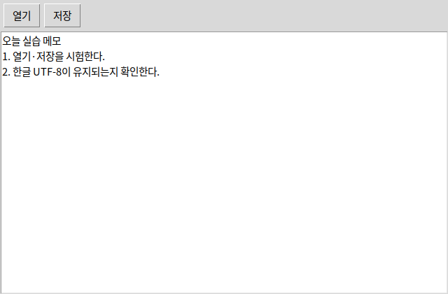
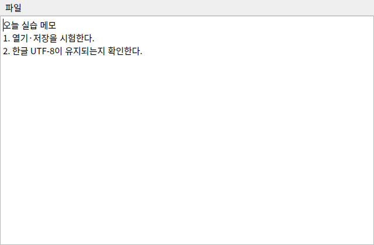
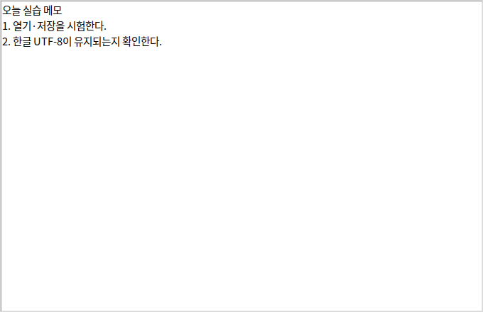
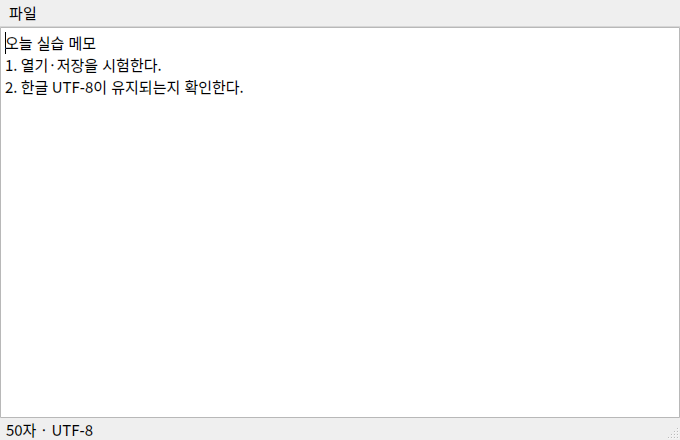

from tkinter import filedialog열기·저장 창은 별도 모듈입니다. 경로가 비었으면(취소) 파일을 읽거나 쓰지 않습니다.
 인공지능 파이썬 실무
인공지능 파이썬 실무Ⅱ. GUI 프로그래밍 · 주제 06 / 11
열기와 저장을 만드는 동안 1단원의 import와 함수가 다시 등장합니다.
대단원 Ⅱ. GUI 프로그래밍 교과서 40–59쪽
중단원 02. GUI 프로그래밍 작성 · 49–57쪽
소단원 02. GUI 앱 개발 · 52–55쪽
이 웹 주제의 연계 범위: 52–55쪽
웹 학습 주제 06 / 11
열기와 저장을 만드는 동안 1단원의 import와 함수가 다시 등장합니다.
| 작업 | 입력 | 출력 |
|---|---|---|
| 열기 | 파일 경로 | Text 영역 내용 |
| 저장 | Text 영역 내용 | UTF-8 파일 |
| 취소 | 빈 경로 | 아무 파일도 변경 안 함 |
| 읽기 실패 | OSError | 오류 안내 |
BEFORE THE CODE
새 이름·속성이 코드에 나오기 전에 짧게 봅니다. 외우기보다 역할을 먼저 구별하세요.
| 줄 \ 칸 | 0 | 1 |
|---|---|---|
| 1 | 안 · "1.0" | 녕 · "1.1" |
| 2 | 요 · "2.0" | 끝 자동 개행 |
| 저장할 때 끝 | 파일에 들어가는 글 | 다시 열면 |
|---|---|---|
| get("1.0", "end") | 안녕 / 요 + 자동 개행 | 빈 줄이 하나 더 생깁니다 |
| get("1.0", "end-1c") | 안녕 / 요 | 쓴 글만 그대로입니다 |
from tkinter import filedialog열기·저장 창은 별도 모듈입니다. 경로가 비었으면(취소) 파일을 읽거나 쓰지 않습니다.
Text의 시작 위치입니다. 줄.칸에서 첫 줄은 1, 첫 칸은 0입니다. 위 격자 왼쪽 위 칸이 "1.0"입니다.
끝에서 문자 하나를 뺀 위치입니다. Text가 붙인 마지막 개행을 빼고 저장하면, 다시 열 때 빈 줄이 쌓이지 않습니다.
HISTORY / VIDEO
간단한 텍스트 편집기는 GUI 교재의 단골 완성 과제입니다. 파이썬 기본 IDE인 IDLE도 tkinter로 만든 실제 프로그램입니다.
Tkinter Course — Create Graphic User Interfaces in Python Tutorial (freeCodeCamp) ↗
영어 공개 강의입니다. Text·파일 열기 대화 상자 구간이 메모장과 맞습니다. 학교 네트워크·연령 정책을 확인하세요.
RESULT PREVIEW

① tkinter와 filedialog를 임포트합니다. ② Tk()로 창을 만들고 title로 제목을 정합니다. ③ Text(window, wrap="word")를 생성하고 pack(expand=True, fill="both")로 창을 채웁니다.
④ 열기 함수: askopenfilename → 취소 여부 확인 → UTF-8로 읽기 → delete("1.0", END)로 기존 내용 제거 → insert로 새 내용 삽입입니다. "1.0"은 첫 줄 0번째 문자입니다.
⑤ 저장 함수: asksaveasfilename(defaultextension=".txt") → 취소 확인 → Text.get으로 읽기 → UTF-8 파일 쓰기입니다. 교과서의 END는 Text가 유지하는 마지막 개행까지 포함합니다. 추가 개행을 제외하려면 "end-1c"를 사용합니다.
⑥ Menu에 열기·저장·종료를 연결합니다. ⑦ mainloop()로 이벤트를 기다립니다. ⑧ 전체 코드를 실행하고 한글 파일 저장→재열기를 시험합니다. 교과서 55쪽 탐구의 라이브러리 이름은 tkinter입니다.
PySide6 비교: QMainWindow의 중앙에 QPlainTextEdit를 두고 QAction을 메뉴에 연결합니다. QFileDialog는 (경로, 선택 필터)를 반환하므로 path, _로 받습니다. setPlainText/toPlainText가 텍스트 넣기·읽기 역할입니다.
확장 완성 예제에는 글자 수, Ctrl+O/Ctrl+S, 다른 이름으로 저장, 창 닫기 시 미저장 확인, UTF-8 읽기·쓰기 실패 안내가 들어 있습니다. 저장 대화 상자를 취소하면 닫기도 취소되도록 반환값을 연결했습니다. 기본 메모장과 비교하며 한 기능씩 옮기세요.
완성본을 한 번에 외우지 말고 단계를 나누세요. ① 창과 Text, ② 열기·저장 버튼과 취소 검사, ③ 메뉴를 붙인 교과서 전체 코드, ④ PySide6 대응, ⑤ 미저장 확인이 있는 개선본입니다. 53쪽 열기 순서는 대화 상자 → 취소 확인 → UTF-8 읽기 → 기존 글 삭제 → 삽입입니다. 저장은 경로 선택 → 취소 확인 → get → 쓰기입니다.
예제를 선택하면 바로 아래에서 코드를 수정하고 실행할 수 있습니다. 작성한 코드는 예제별로 저장됩니다.
BEFORE THE CODE
새 이름·속성이 코드에 나오기 전에 짧게 봅니다. 외우기보다 역할을 먼저 구별하세요.
window = tk.Tk()기본 창을 만듭니다. title은 제목, geometry는 처음 크기입니다.
tk.Text(window, wrap="word")여러 줄 편집기입니다. wrap="word"는 단어 단위로 줄을 바꿉니다. Entry는 한 줄입니다.
text_area.pack(expand=True, fill="both")창이 커져도 편집기가 남는 공간을 채웁니다. 메모장 본문에 쓰는 배치입니다.
임포트 → 창 만들기 → Text를 붙이기까지가 메모장의 뼈대입니다. 파일 대화 상자는 다음 예제입니다.
RESULT PREVIEW

BEFORE THE CODE
새 이름·속성이 코드에 나오기 전에 짧게 봅니다. 외우기보다 역할을 먼저 구별하세요.
| 줄 \ 칸 | 0 | 1 |
|---|---|---|
| 1 | 안 · "1.0" | 녕 · "1.1" |
| 2 | 요 · "2.0" | 끝 자동 개행 |
| 저장할 때 끝 | 파일에 들어가는 글 | 다시 열면 |
|---|---|---|
| get("1.0", "end") | 안녕 / 요 + 자동 개행 | 빈 줄이 하나 더 생깁니다 |
| get("1.0", "end-1c") | 안녕 / 요 | 쓴 글만 그대로입니다 |
filedialog.askopenfilename()열 파일을 고르는 대화 상자입니다. 취소를 누르면 빈 문자열이 돌아오므로 바로 열지 말고 검사합니다.
filedialog.asksaveasfilename(defaultextension=".txt")저장 경로를 고릅니다. defaultextension은 확장자를 빼먹었을 때 .txt를 붙입니다.
text_area.delete("1.0", tk.END)"줄.칸"입니다. 첫 줄은 1, 첫 칸은 0입니다. 위 격자에서 왼쪽 위가 "1.0"입니다. 열기 전에 기존 글을 지웁니다.
text_area.get("1.0", "end-1c")Text는 끝에 줄바꿈을 하나 더 가지고 있습니다. 저장할 때 그 한 글자를 빼면 다시 열 때마다 빈 줄이 늘지 않습니다. 위 표에서 end와 비교하세요.
열기·저장 대화 상자에서 취소를 눌러 보세요. 기존 글이 그대로면 분기 검사가 맞은 것입니다.
한글 파일을 읽고 쓸 때 지정하는 인코딩입니다. 빼면 환경에 따라 글자가 깨질 수 있습니다.
RESULT PREVIEW

BEFORE THE CODE
새 이름·속성이 코드에 나오기 전에 짧게 봅니다. 외우기보다 역할을 먼저 구별하세요.
menu = tk.Menu(window)
window.config(menu=menu)
menu.add_cascade(label="파일", menu=file_menu)창 위쪽 메뉴 줄을 만듭니다. add_cascade는 "파일"처럼 펼쳐지는 상위 메뉴입니다.
file_menu.add_command(label="열기", command=open_file)메뉴 항목에 함수를 연결합니다. Button의 command와 같습니다. command=open_file()처럼 괄호를 붙이면 창을 열 때 대화 상자가 뜹니다.
tk.Menu(menu, tearoff=False)메뉴를 창 밖으로 떼는 점선을 숨깁니다. 교과서 예제의 흔한 보완입니다.
메뉴를 붙이고 mainloop로 기다린 뒤, 한글 파일을 저장했다가 다시 열어 봅니다. 열기·저장 함수는 앞 단계와 같습니다.
HISTORY / VIDEO
메뉴·열기·저장이 있는 편집기는 1980년대 GUI의 대표 형태입니다. tkinter의 filedialog와 Text가 그 뼈대를 만듭니다.
RESULT PREVIEW
BEFORE THE CODE
새 이름·속성이 코드에 나오기 전에 짧게 봅니다. 외우기보다 역할을 먼저 구별하세요.
class MemoWindow(QMainWindow):메뉴·상태줄·중앙 위젯을 가진 창입니다. 일반 QWidget보다 문서 앱에 맞습니다.
self.setCentralWidget(self.editor)편집기를 창의 가운데에 둡니다. pack이 아니라 메인 창의 중앙 영역입니다.
action = QAction("열기", self)
action.triggered.connect(self.open_file)메뉴 항목입니다. triggered 시그널이 버튼의 clicked와 같은 역할입니다.
path, _ = QFileDialog.getOpenFileName(...)(경로, 선택한 필터) 튜플을 반환합니다. path, _로 받습니다. 취소하면 빈 경로입니다.
editor.setPlainText(글)
editor.toPlainText()여러 줄 텍스트를 넣거나 읽습니다. QLineEdit의 setText/text와 이름을 구별하세요.
메뉴·중앙 위젯이 있는 문서 창입니다. 인사 앱의 QWidget보다 메모장에 맞습니다.
RESULT PREVIEW

BEFORE THE CODE
새 이름·속성이 코드에 나오기 전에 짧게 봅니다. 외우기보다 역할을 먼저 구별하세요.
root.bind("<Control-s>", lambda event: self.save_file())Ctrl+S가 저장 함수를 호출합니다. bind는 이벤트 객체를 넘기므로 lambda로 감쌉니다.
root.protocol("WM_DELETE_WINDOW", self.close)창의 X 버튼을 눌렀을 때 destroy 대신 close를 부릅니다. 미저장 확인을 넣을 수 있습니다.
self.text.bind("<<Modified>>", self.changed)문서가 바뀌면 dirty를 True로 둡니다. 제목 앞에 *를 붙이는 신호입니다.
messagebox.askyesnocancel("미저장 문서", "...")예/아니요/취소 세 갈래입니다. None은 취소, True는 저장 후 진행, False는 저장하지 않고 진행입니다.
self.text.get('1.0', 'end-1c')마지막 자동 개행을 빼고 글자 수를 셉니다. 저장에도 같은 끝을 쓰면 빈 줄이 쌓이지 않습니다.
tk.Text(root, wrap="word", undo=True)Ctrl+Z로 되돌리기를 켭니다. 기본 Text는 undo가 꺼져 있습니다.
file_menu.add_command(..., accelerator="Ctrl+S")메뉴에 단축키 글자만 보여 줍니다. 실제 키 동작은 bind가 합니다. 둘 다 넣으세요.
저장 이후 글이 바뀌었는지입니다. 제목 앞 *와 닫기 확인의 기준입니다.
RESULT PREVIEW

BEFORE THE CODE
새 이름·속성이 코드에 나오기 전에 짧게 봅니다. 외우기보다 역할을 먼저 구별하세요.
action.setShortcut(QKeySequence.StandardKey.Save)운영체제의 표준 저장 단축키를 붙입니다. Windows는 Ctrl+S, macOS는 ⌘S입니다.
self.editor.document().isModified()문서가 저장 이후 바뀌었는지입니다. 저장에 성공하면 setModified(False)로 되돌립니다.
def closeEvent(self, event):
event.accept() # 또는 event.ignore()창을 닫으려 할 때 호출됩니다. 미저장이면 ignore()로 닫기를 취소합니다.
action.triggered.connect(lambda checked=False, fn=handler: fn())triggered는 체크 여부를 넘깁니다. 그대로 save_file에 연결하면 save_as로 오해할 수 있어 감쌉니다.
QMessageBox.question(..., B.Save | B.Discard | B.Cancel)저장/버리기/취소 세 갈래입니다. askyesnocancel에 대응합니다.
Qt가 기억하는 dirty 플래그입니다. 저장 후 setModified(False)로 되돌립니다.
RESULT PREVIEW

CODE WORKSPACE
실행 엔진은 처음 실행할 때 내려받습니다. 패키지 크기에 따라 최초 준비에 최대 3분이 걸릴 수 있으며 네트워크가 필요합니다. 실행은 최대 30초이며 중지 후 다시 실행할 수 있습니다.
실행할 예제를 선택하세요.
INTERACTIVE GUI CONCEPTS
학습용 웹 시뮬레이션입니다. 아래 조작은 정해진 예제의 동작을 재현하며, 편집한 Python 코드를 실행하지 않습니다. 실제 tkinter·PySide6 창은 프로젝트를 내려받아 PC에서 실행하세요.
이름을 입력하세요.
이벤트를 기다립니다.
창 너비를 바꿔 배치 변화를 확인하세요.
0자 · 0줄
PRACTICE / RETRY / UNDERSTAND
이 주제와 연결된 문제만 보여 줍니다. 단원 전체 문제는 단원 안내 페이지에서 이어서 풀 수 있습니다.